Until 1873, Budapest was two cities. Buda — old, royal, hilly, fortified — sat on the west bank of the Danube. Pest — flat, busy, trading — sprawled across the east. They could not have been more different. The Chain Bridge, opened in 1849, gave them their first permanent connection. Twenty-four years later, an act of parliament merged them, along with the smaller town of Óbuda, into a single capital.
We drove into the city on a hot Thursday and left the car in Pest, then gave the whole day to our feet: first the great gilded dome of St. Stephen's Basilica, then over the Chain Bridge and up the little funicular to the old royal hill — Matthias Church, the white towers of Fisherman's Bastion, and Buda Castle — before turning, as the light softened, to the river itself.
This issue is about a city that learned to be one thing after spending centuries being two — and is still, somehow, both.
— The Munasinghes, 2026
The story so far: from Beijing's Great Wall and Forbidden City we flew west into Europe — a jet-lagged first week through Munich, the salt mines and lake villages of Austria, two golden days in Prague, and then imperial Vienna, which closed our Austrian chapter.
Now the great river carries us on. Hungary is our fourth chapter — Budapest, the "Queen of the Danube," a single capital stitched together in 1873 from hilly, royal Buda on the west bank and flat, trading Pest on the east. This page rides at the front of every issue: where we've been, where we are, and where we're headed next.
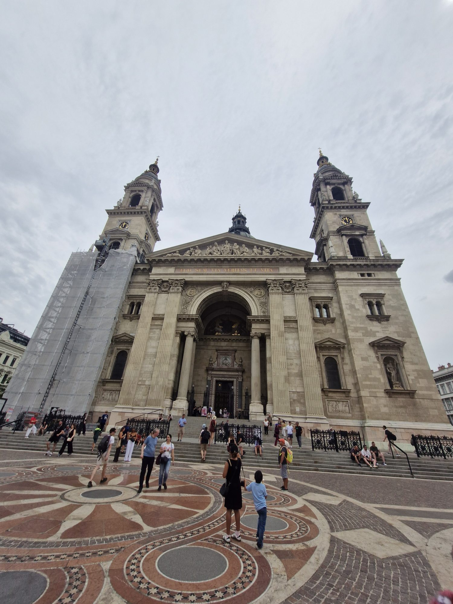
Hungary has one patron above all others: Stephen — István — its first Christian king, crowned on Christmas Day of the year 1000 (or New Year's of 1001, depending which chronicle you trust). He dragged a pagan people of horse-archers into the Christian West, founded bishoprics, and died in 1038; within fifty years the church had made him a saint. This basilica, finished nine centuries later, is his monument, and it is named for no one else.
Building it took from 1851 to 1905 — fifty-four years, three architects, and one disaster: in 1868 the half-built dome collapsed in a storm, and the whole thing had to be taken down and begun again. The finished dome stands exactly 96 metres high — precisely level with the dome of the Parliament. No accident: by an old city rule nothing in Budapest may rise above 96 metres, a number that salutes the year 896, when the Magyar tribes first rode into the Carpathian basin.
Inside, it seats eight and a half thousand; it is the largest church in Budapest and, with the Parliament, one of the two tallest buildings in the city. We came in from the heat of the square, and the children went quiet the way children do under a very large ceiling.
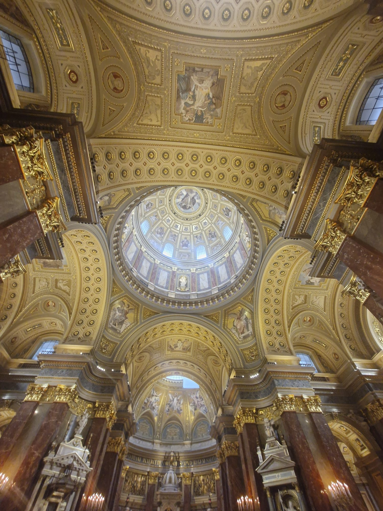
The inside is a warmer thing than the grey stone front lets on: caramel and gold, with more than fifty kinds of coloured marble on the walls and floor. Light falls from the ring of windows at the base of the dome and pools on the crossing far below. Every surface that isn't marble is painted or gilded, and the eye simply gives up trying to count.
At the far end, on the high altar, stands a white Carrara-marble statue of the king himself, carved by Alajos Stróbl, ringed by bronze reliefs of his life. Around the base of the sanctuary runs a Latin prayer to Stephen: intercede for us with the King of Kings. And we climbed it — a lift for most of the way, then a last spiral of stone stairs out onto the colonnade that rings the dome. Even Avin, all of four years old, made it to the very top, and one of the widest views in Budapest was his reward.
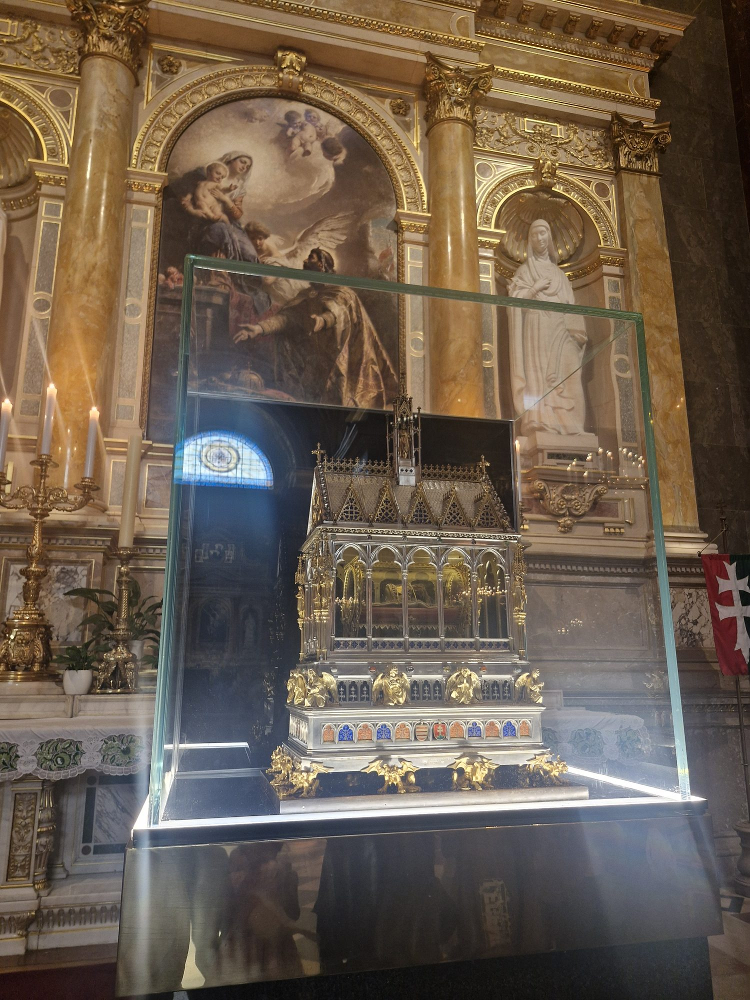
When Stephen's tomb was opened in 1083, the year of his canonisation, his body had decayed — but his right hand, the story goes, was found whole, still bearing the ring of state. Hungary has kept it ever since. It has not been an easy keeping: through invasions and centuries the relic travelled — to Dalmatia, to Ragusa (today's Dubrovnik) for some three hundred years — before Empress Maria Theresa had it brought home to Buda in 1771.
Today it rests in its own chapel, in a glass-sided reliquary shaped like a little Gothic church. Drop a coin and a light comes on for two minutes so you can see it clearly. Once a year, on 20 August — St. Stephen's Day, Hungary's national holiday — the hand is lifted out and carried through the streets of Budapest at the head of a great procession, exactly as it has been for centuries.
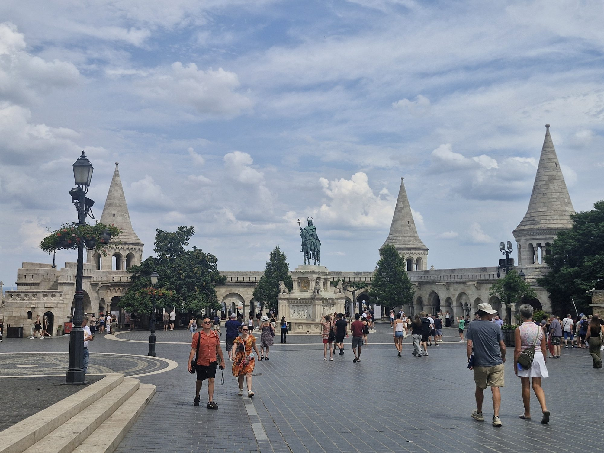
Fisherman's Bastion is the great illusion of Budapest. It has the pale stone, the pointed turrets and the cloistered walks of a medieval castle, and it is younger than the telephone. Frigyes Schulek built it between 1895 and 1902 — not as a fortress but as a viewing terrace, a decorative crown for the hill, raised over the old defensive walls for the country's millennium celebrations.
Its seven tent-roofed towers are not random: one for each of the seven Magyar chieftains who led their tribes into the Carpathian basin in 895. And its name is older than the stone — this stretch of wall was, by tradition, defended in the Middle Ages by the guild of fishermen from the little town below, and the fish market stood at its foot.
We came up from the funicular and walked north along the hill to reach it. Between the Bastion and Matthias Church next door stands a green bronze king on horseback — St. Stephen again, of course; in this city he is never far away. The children ran the length of the white arcade while we stood at the rail and simply looked: Parliament, river, bridges, and the whole flat sweep of Pest laid out under a moving sky.
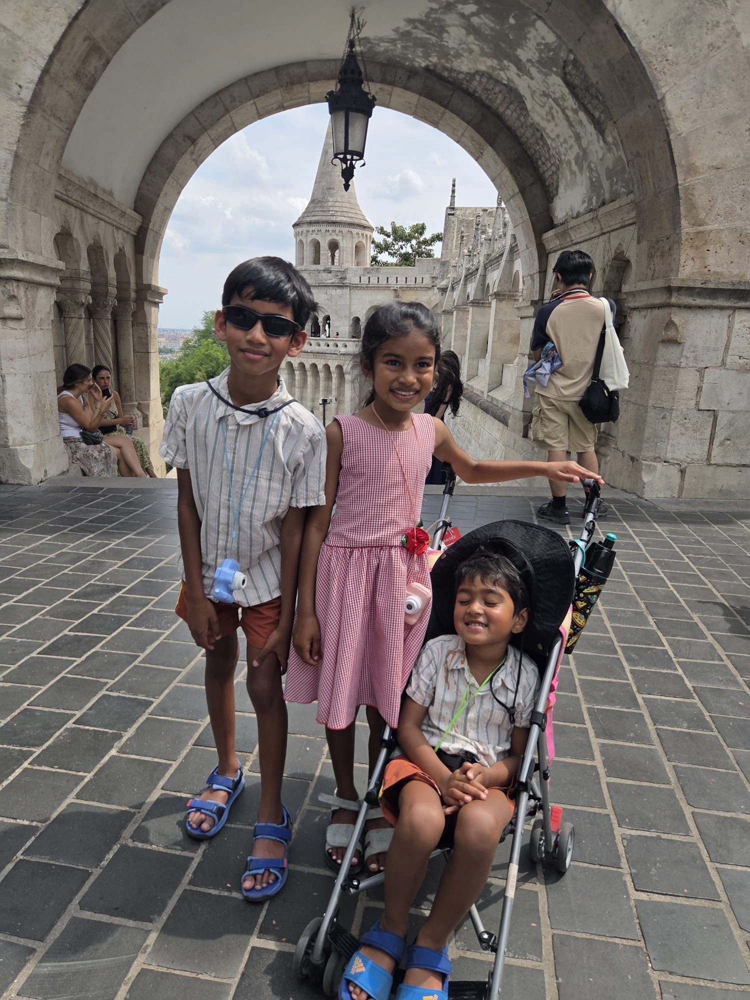
The open terrace up top gives you the view, but the magic of Fisherman's Bastion is down a level, along the covered walk. Schulek built it as a neo-Romanesque cloister — a run of pale arches and stubby columns, with knights standing in the wall niches and wrought-iron lanterns hanging from the vaults. Look through any arch and it frames something: a cone-roofed tower, a flight of steps, the Danube far below.
A grand ceremonial staircase sweeps down from here toward the Watertown, the old fishermen's quarter that gave the bastion its name. Photographers come at dawn to catch these arches empty and gold; at midday we simply waited our turn, shuffled into the frame, and took it.
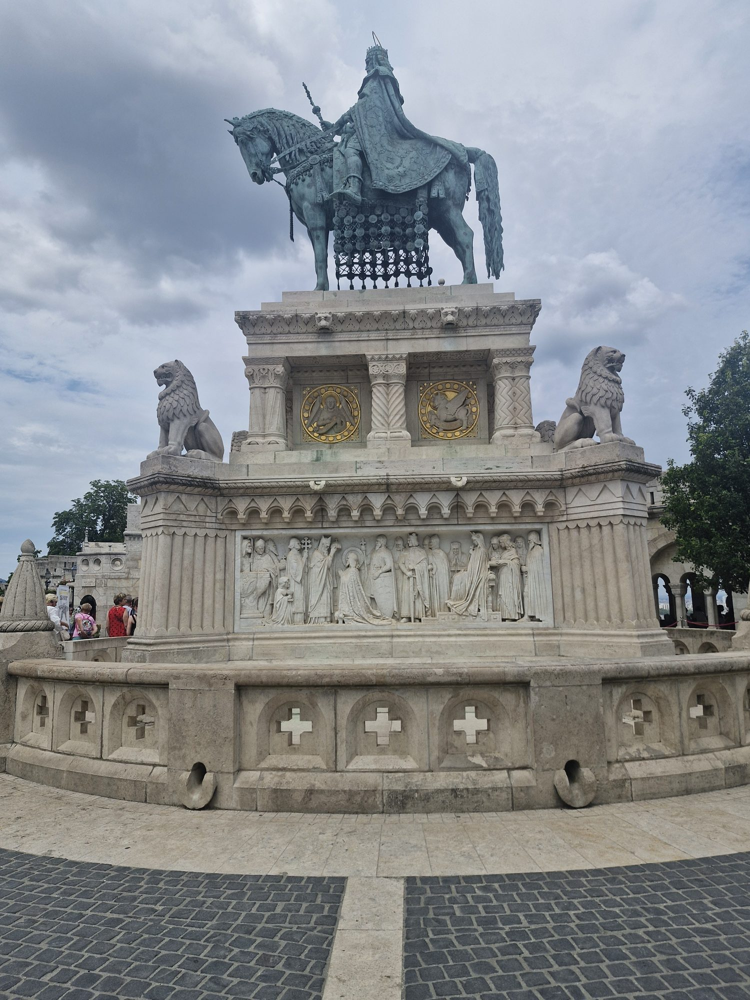
Cast in bronze by the sculptor Alajos Stróbl and unveiled in 1906, this is the still centre of Castle Hill — the point the whole terrace is arranged around. Stephen sits crowned and robed, not as a warrior but as a founder, holding aloft the apostolic cross that Pope Sylvester II is said to have granted him. That twin-barred cross went on to become the emblem of the country; you will find it on the Hungarian coat of arms to this day.
Look closely at the pale reliefs around the base and you find scenes from Stephen's life — and one small, sly joke. In one panel the architect Schulek has carved himself, kneeling to offer the king a model of the very Fisherman's Bastion he was building. A thousand-year-old saint, accepting a gift from the man who framed his statue: a signature hidden in plain sight.
The children liked the four stone lions best, one at each corner, keeping their patient guard. We circled the plinth once, then turned to the church.
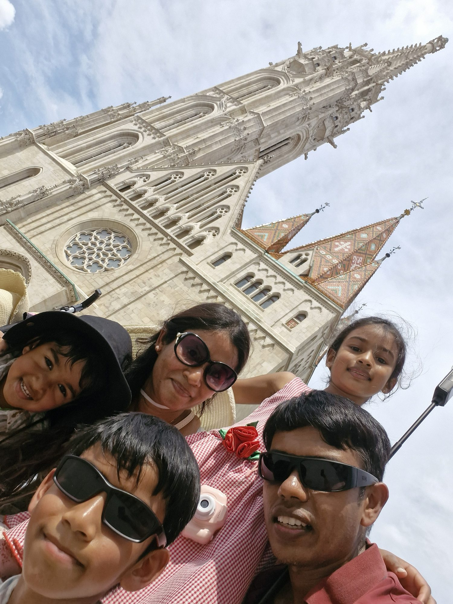
Everyone calls it Matthias Church, but its real name is the Church of Our Lady, and it is far older than the king who lent it his nickname. A church has stood on this spot since the days of St. Stephen; the Gothic building we see now went up in the 14th century. Its by-name comes from Matthias Corvinus, the great Renaissance king, who was married here — twice — and whose black raven crest still turns up in the stonework.
It has not always been a church. When the Ottomans took Buda in 1541 they stripped out the furnishings, whitewashed the frescoes, and turned it into the city's chief mosque for nearly a century and a half. Only after the Christian reconquest of 1686 did it become a church again. The fairy-tale look it wears today — the tiled roof, the spiky pinnacles — came later still, from Frigyes Schulek's grand restoration in the 1870s–90s (the same architect who gave us the Bastion and the bronze king outside).
This is coronation ground. Franz Joseph and his empress Elisabeth — the beloved "Sisi" — were crowned King and Queen of Hungary here in 1867, with a Mass that Franz Liszt wrote for the day; the last Habsburg coronation of all took place here in 1916. Inside, every wall is painted top to bottom in Hungarian pattern — but by now the children were hot and hungry, so we saved the inside for a slow look and stepped back into the square.
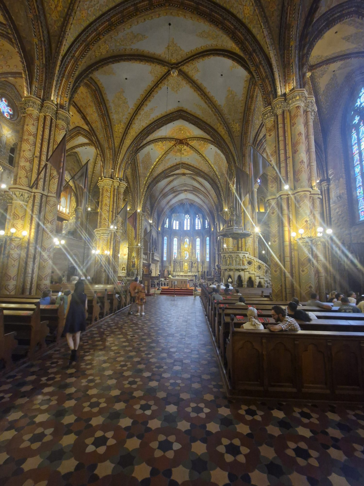
For nearly a century and a half this ceiling looked down on Muslim prayer, not Mass: after 1541 the Ottomans whitewashed every image and used the building as Buda's chief mosque. When Frigyes Schulek restored it in the 1870s–90s he did not simply scrub it back — he had the entire interior repainted, floor to vault, in a dense medieval-Hungarian style that no church had ever quite worn before.
The result is unlike anywhere else in the city. Geometric borders run along every rib; saints and Hungarian kings march across the walls; the floor is a carpet of patterned tile. On a bright afternoon the light comes through the stained glass in long visible shafts and lands on all that gold. The children stopped talking, which is how we always know a place has done its work.
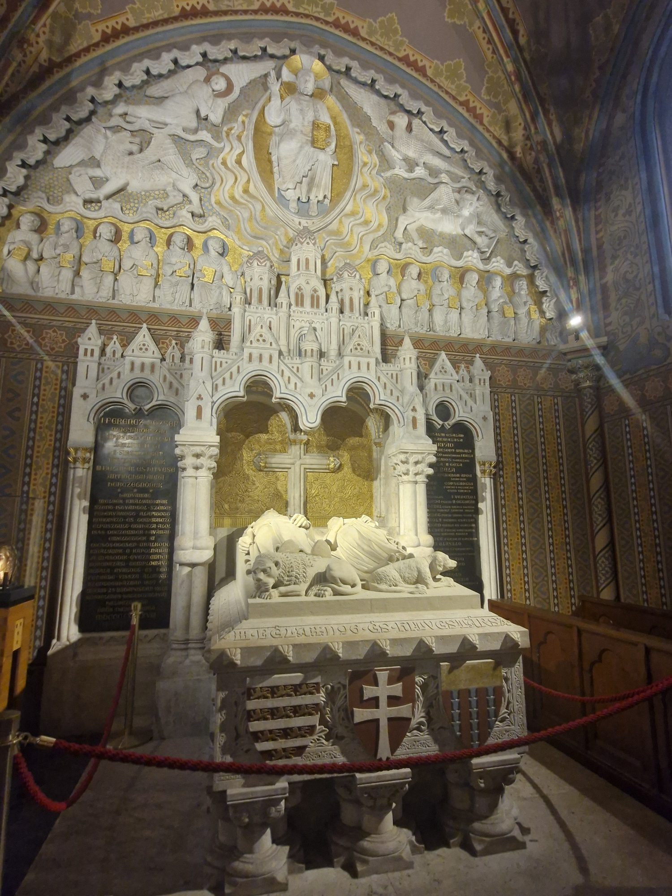
Béla III ruled from 1172 to 1196, and ruled hugely. Raised at the imperial court of Byzantium, he came home to make medieval Hungary one of the richest and best-run kingdoms in Europe, his revenues rivalling those of the kings of France and England. When he died he was buried, like the kings before him, in the great royal basilica at Székesfehérvár.
That church did not survive the Ottoman wars — it was blown up and quarried away, its royal graves scattered. Béla's tomb, and his queen's, happened to be found intact during excavations in 1848; his are the only medieval Hungarian royal remains ever identified with certainty. In 1898 they were carried here and laid under this canopy — making Matthias Church, almost by accident, the last resting place of a king.
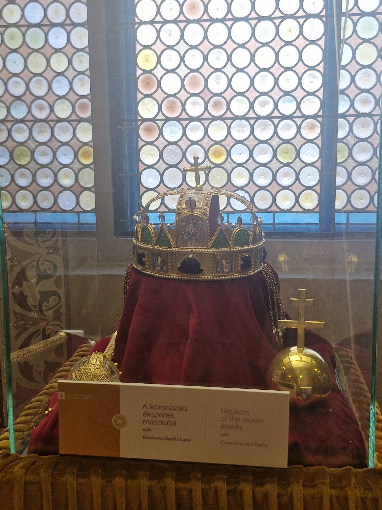
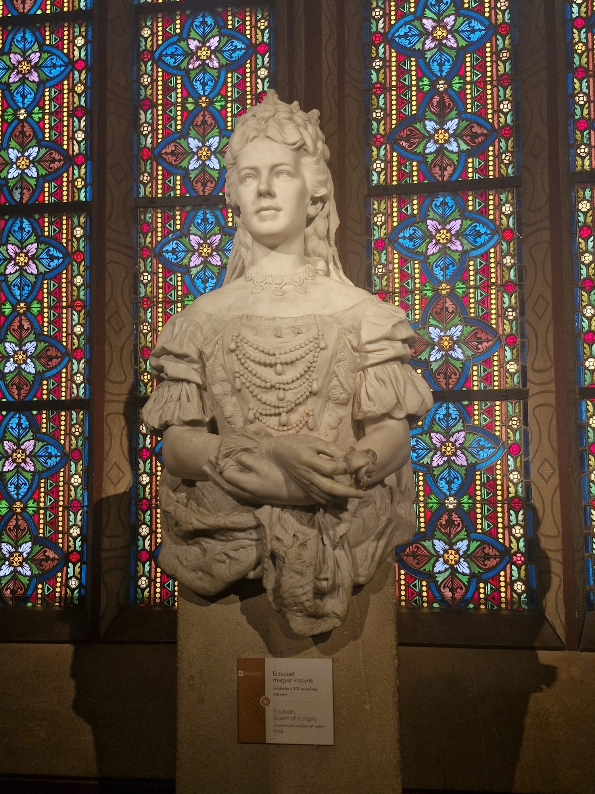
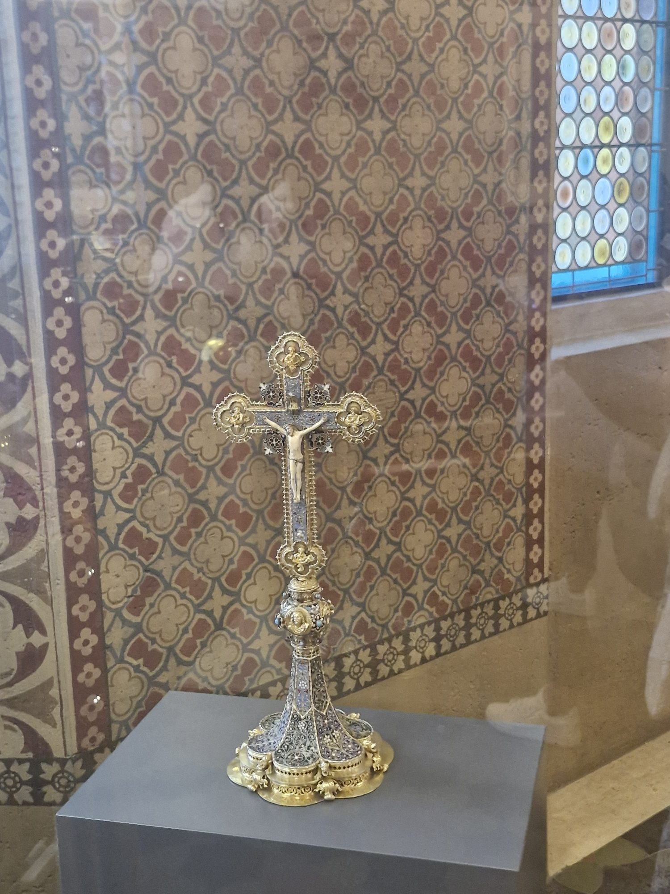
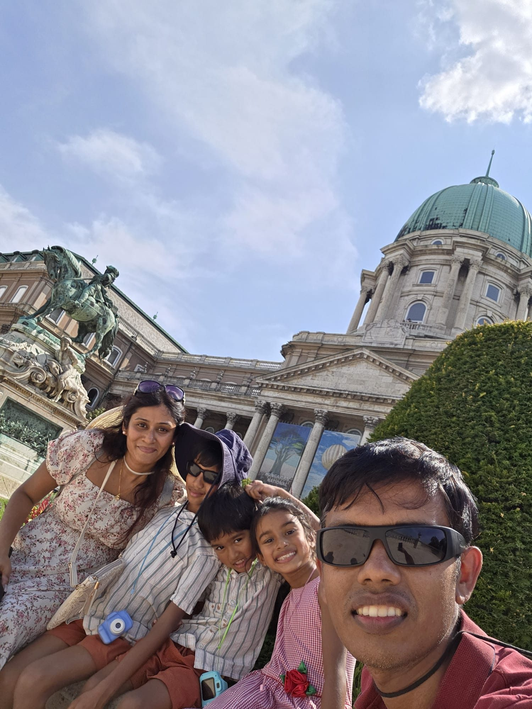
King Béla IV raised the first fortress on this hill in the 1240s, straight after the Mongols had burned the towns below. Over the next two centuries it grew into one of the great courts of Europe — a Gothic and Renaissance palace under Matthias Corvinus, its library and humanist scholars the envy of Italy. Then came the Turks, who held Buda for a century and a half, and the terrible siege of 1686 that won it back and left the palace in ruins.
The Habsburgs rebuilt it grander still; the Second World War flattened it once more, in the brutal siege of 1944–45; and the dome we stood beneath is really a child of the 1950s reconstruction. No royal family has lived here for over a hundred years. Instead the vast wings hold the National Gallery, the Budapest History Museum and the Széchényi Library — and a hill full of visitors, us among them, squinting up at a palace that simply refuses to disappear.
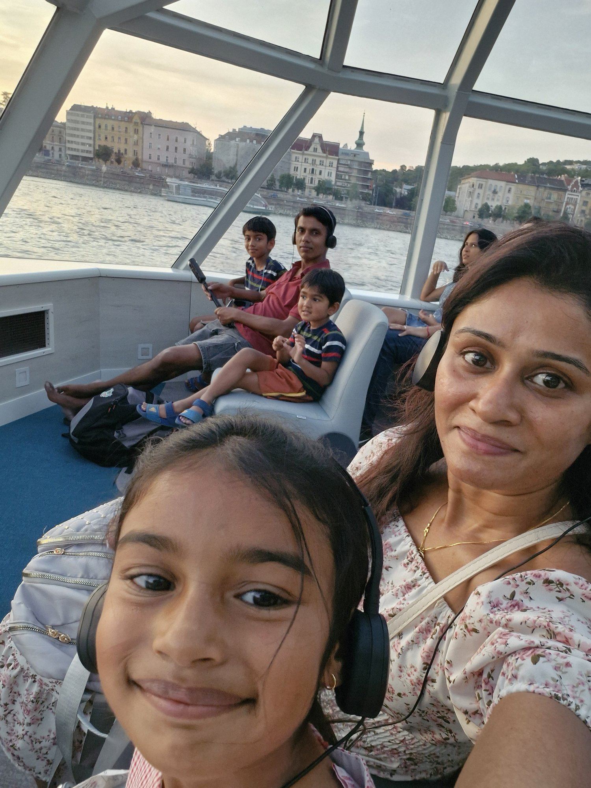
We had walked all day — the Basilica in the morning, the whole castle hill through the afternoon — and there is no better reward than to sit down and let the city come to you. We boarded around half past eight, as the light began to soften, and the boat slipped out onto the Danube just as the low sun set the western façades alight.
The riverbanks of Budapest are a UNESCO World Heritage site, and from midstream you understand why: palace after grand palace along the water, the great bridges passing overhead one by one, green Margaret Island in the middle of the stream. The children put on their headphones and went quiet, watching the buildings they had stood beneath that morning now glide past from the water — and, as dusk came down, begin one by one to light up.
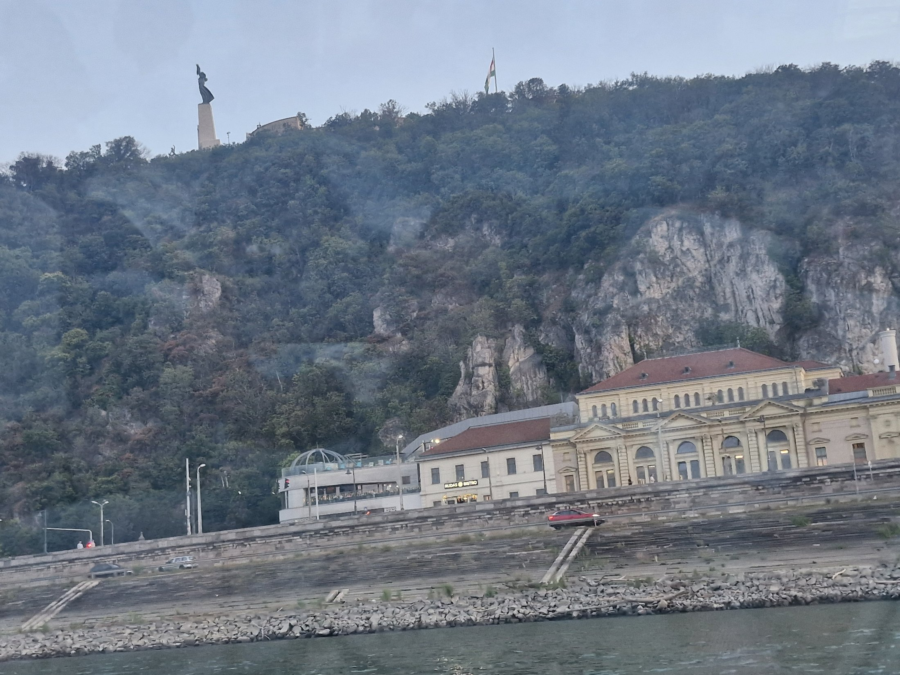
The hill is named for St. Gellért, an Italian bishop who helped King Stephen convert Hungary a thousand years ago — and who, by tradition, was martyred here by pagans who sealed him in a barrel and rolled him off this very cliff into the river. On the summit stands the Liberty Statue, a fourteen-metre bronze woman holding a palm frond above her head. Raised in 1947, she has watched over the city ever since, floodlit white against the night sky.
At the hill's foot, right at the waterline, sits one of Budapest's oldest treasures: the Rudas Baths, a Turkish bathhouse built in the 1550s during the Ottoman occupation, its octagonal pool still roofed by the original stone dome. The children, headphones on, watched it all slide past — saint, statue and steam — as the boat carried us down the darkening river.
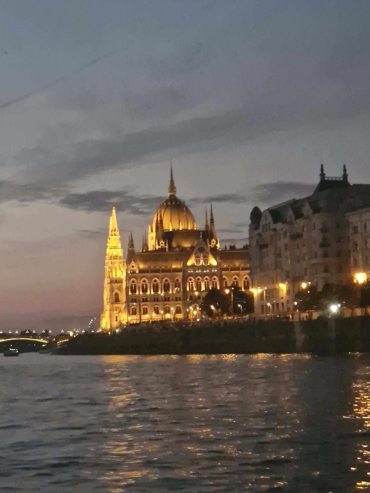
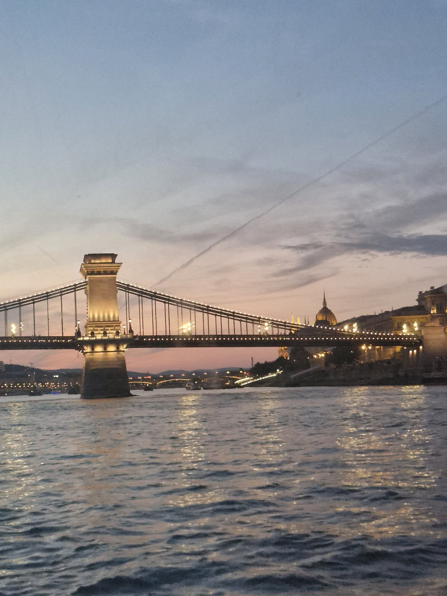
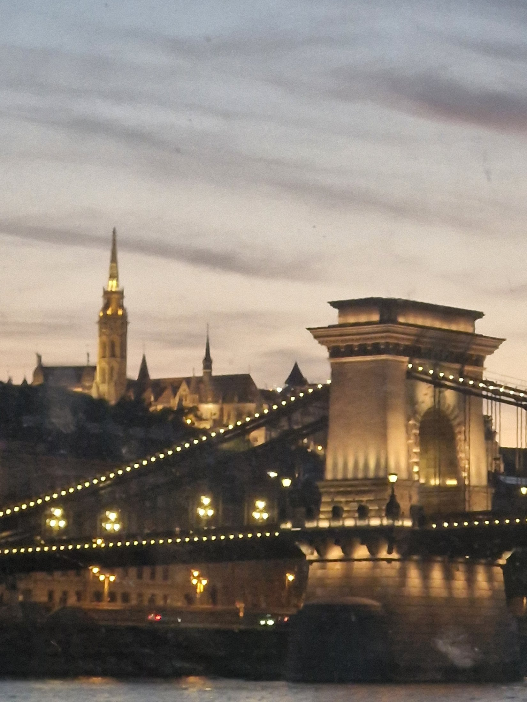
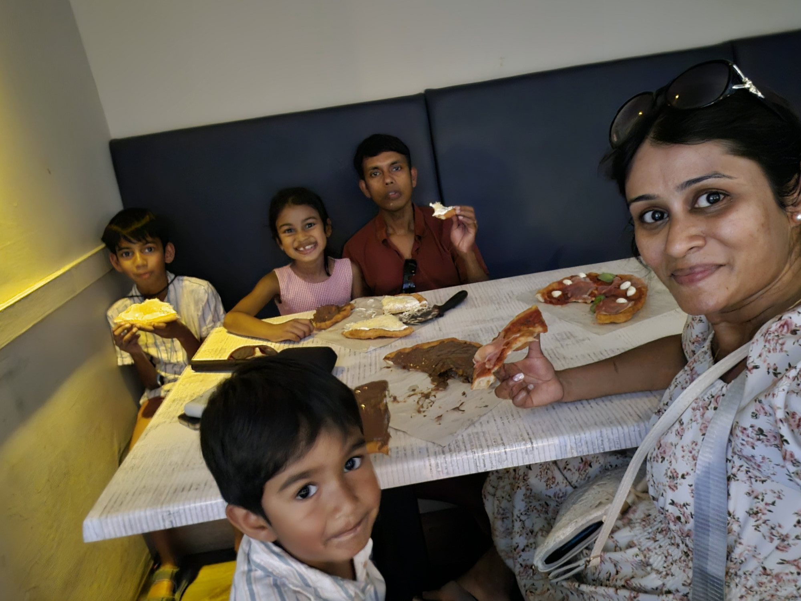
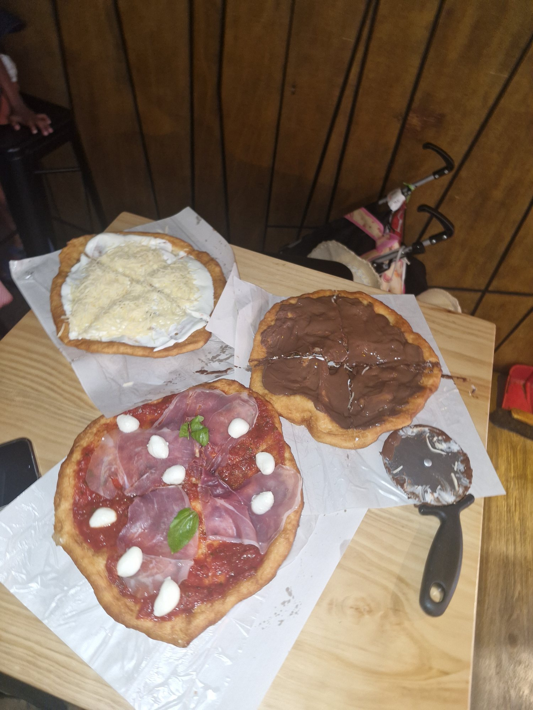
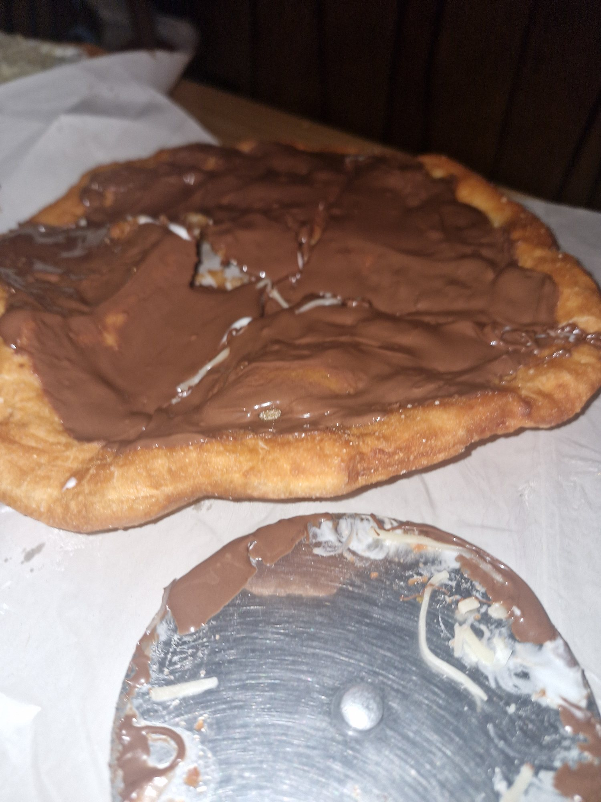
Budapest gives you two cities for the price of one. We spent the morning in flat, busy Pest, under the dome of St. Stephen's; we spent the afternoon on the royal hill of Buda, among churches and white towers and a palace that has been knocked down and raised up more times than we could keep straight. Between them ran the Danube, and every bridge across it a little celebration.
It was hot, and there was a great deal of walking, and a stroller to haul up a great many steps — but the children carried their own small cameras and photographed everything, and nobody complained for long. It was slower than Vienna, gentler than Prague. And tonight, as the light softens, we turn to the river itself, to see the whole city from the water.